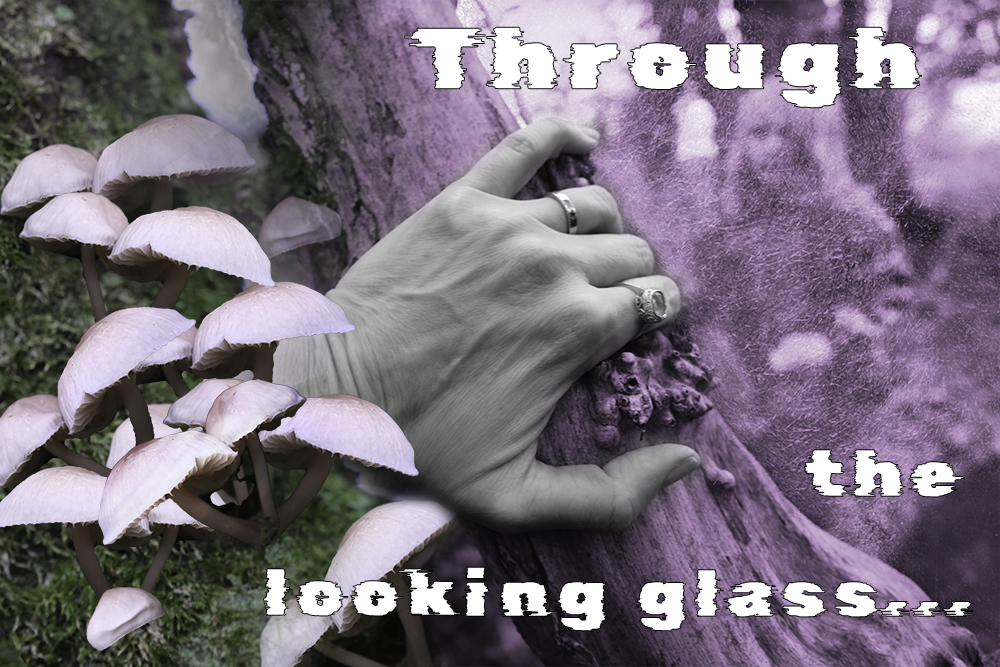

Resolution and resizing
Recall that Photoshop is a raster graphic editing software, which means that images are comprised of pixels (units). The resolution of the image is the number of pxiels within an image. This is displayed as width and height values, along with ppi (pixels per inch). Redistribution is when the number of pixels remains the same, but the weight & height or ppi are changed. Resampling is when pixels are removed or added to an image.
Note: it is best practice to always down size an image (remove pixels) and not upsize (add pixels to an image). Always start with the highest resolution image possible for editing.
In-class activity 1
- Go to Wikimedia Commons. Search for an image and download the smallest and highest resolution versions of the image.
- Open both images in Photoshop
- Open Image Resize and experiment with redistribution and resampling
- Save work as separate files and place original images and resized versions in a folder.

Make-a-Meme
According to Limor Shifman , a meme is "a group of digital items sharing common characteristics ofcontent, form, or stance, which (b) were created with awareness of each other, and (c) were circulated, imitated, and transformed via the internet by many users." Memes take advantage of the affordances and capacities of digital image editing software like Photoshop and communications technologies of the internet for production and distribution. Memes are an excellent example of network culture. We are going to produce a meme in class in order to become familiar with the fundamentals of Photoshop (working with layers and adding text).

In-class activity 2
- Download this image from Wikimedia commons.
- Open file in Photoshop and check image size.
- Crop image as a square.
- Add text. Look at different typefaces and sizes. Additional fonts are available through Adobe Fonts.
- Make the text all caps, white with black outline.
- Move the text around the image and add a second line.
- Download this image from NASA. Open in Photoshop and resize. We will use this image to work with selection and masking tools.
- Copy and paste selection from image two into image one in order to create a collage.
- Resize as instructed in class.
- Once you are satisfied with your work, save as PSD file to preserve layers and save a copy as png. Put both in a folder with the images from activity one, zip folder and upload to Moodle.
Assignment Two
Using a photograph of your own that you have brought into Photoshop, tell a story using that one image. You can add text in Photoshop or create a collage using masks. Note that you can also include open source imagery if you are making a collage, but at least one image must be your own. Save that image as a psd and then optimize it for web, exporting it as a png. Place both the psd and the png in a folder, compress the folder to turn it into a zip file and then upload that zipped file to Moodle. Creativity and technical competence are being graded in this assignment. Late submission will be penalised. Due Friday November 25 by 5 pm.
Note that Adobe offers a 7-day trial of Photoshop if you would like to work on the assignment using your own computer. Next week's lab will be dedicated to working on assignment two, so make sure to start work on assignment (such as taking pictures that you can use) prior to coming to class. The Mac Lab is also available for you to use all day Friday in order to finish the assignment.
